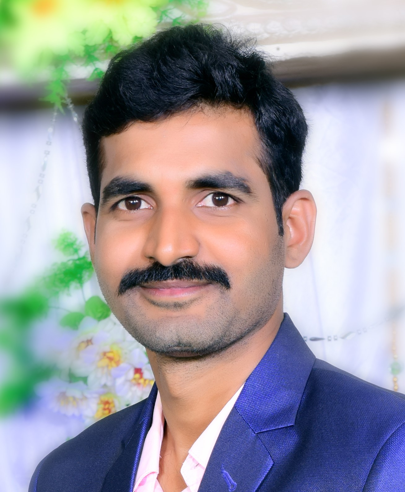

Pruthvinathreddy V

v.pruthvinath@gmail.com
7799806718
Summary:
RedHat Certified System administrator with 5 years of experience in Linux and windows server
administration and system troubleshooting and want to associate myself with organization which has
potential for both Organizational development and personal growth and which provide greater score
to improve, implement and seek a challenging career in the field of Information technology.
Technical Qualification:
- Certified Red hat System Administrator (ID:190-302-430)
- ITIL4 foundation Certified
- FortiGate NSE1 certified.
- AZ-900 Microsoft Fundamentals certified
- SC-900Microsoft certified IAM Fundamentals
Education:
- Bachelor of Technology, CSE, JNT University, April-2013 with 60.00%
- Diploma in CME, State Board Technical Education and Training, April-2010 with 71.4%.
- Matriculation (SSC), Vivekananda High School, April-2007 with .80.00%
Work Experience:
- OM Systems & services pvt ltd as Desktop Support Engineer from JUN 2017 to Feb
2018
- Akshara Enterprises pvt ltd. as customer engineer from Feb 2018 to MAR 2019
- OM Systems & services pvt ltd as Desktop Support Engineer from APR 2019 to JUL
2019
- Enrich AIM as SYSTEM ADMINISTRATOR from Jan 2020 to MAR 2022
- TechstarGroup as SYSTEM ADMINISTRATOR from April 2022 to till now
Key Skills:
- System Administration of Windows Servers
- Strong in Linux Administration, LVM Partitioning, Package management using YUM and RPM
- Basic Network troubleshooting
- OS : Windows desktop and server, RHEL 7/8, CentOS 7/8
Contact Me